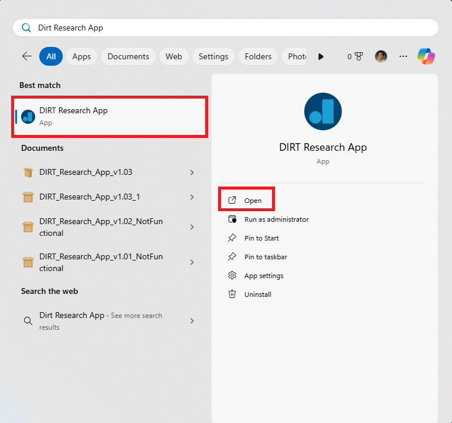

← Go Back
SECTION 4: Installing DIRT App
üí° Note: The current version of the DIRT App is 1.03.
⚠️ Warning: Please read this section completely before installing the DIRT App. The DIRT App opens in fullscreen after it is installed so it may confuse you if you don't fully know what to do.
Download the most current DIRT App
You can download the latest version of the DIRT App here.
Installing the DIRT App
The DIRT App is installed via a .msix file named "DIRT_Research_App_v1.03.msix". Once you have downloaded the installation file,
double click on it to initiate the installation process. You will see the following screen:
Press "Install" to install the DIRT App. Once the app has been installed, it will launch in full screen like below.
For now, you are all done with the set up! Please exit the DIRT App using the exit button at the top right corner.
How to reopen the DIRT App
To reopen the DIRT App moving forward, you can access it by:
- Press the ⊞ Windows button
- Type in DIRT Research App
- Select the DIRT App from the "Best match" list or click on "Open" (either works)

üí° Tip: You can also pin the DIRT Research App to your Start menu and/or Taskbar for quicker access moving forward. Doing so will place the app into your start menu once you
press the ⊞ Windows button or into your taskbar at the bottom of your screen.
Potential issue opening the DIRT App
⚠️ Warning: Sometimes, when the DIRT App is opening, it may only partially launch similar to the image below.

If you do get into this problem, press the ⊞ Windows button + Tab button
to show all the apps currently opened and use your mouse to close out of the partially launched DIRT App (shown in the image below). Once you do this, you can reopen the DIRT App again.